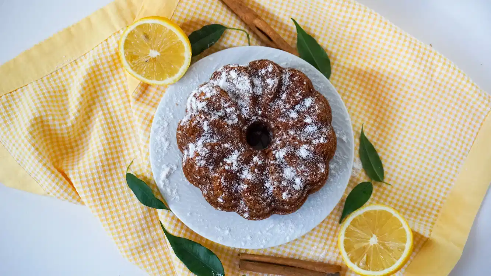
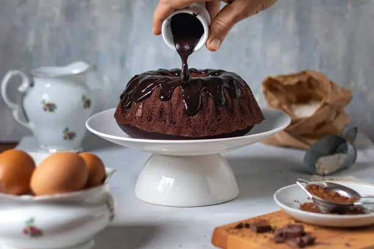
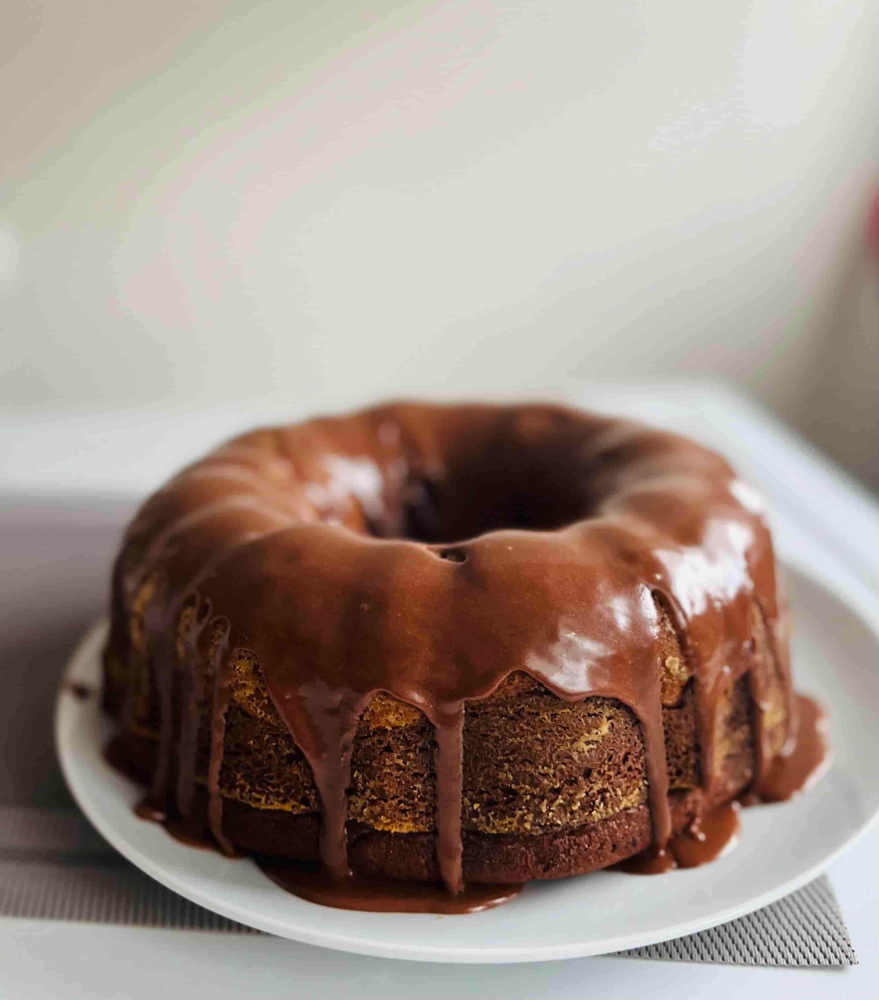
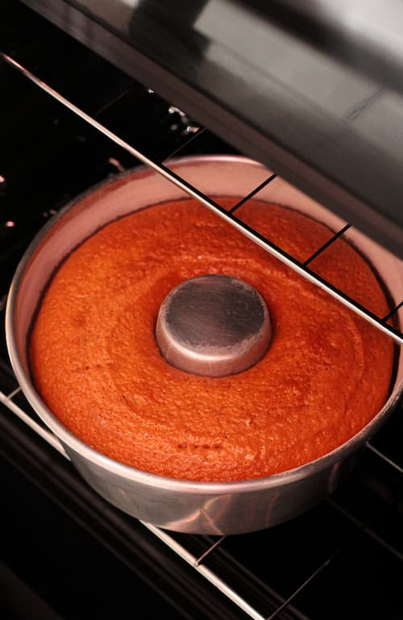
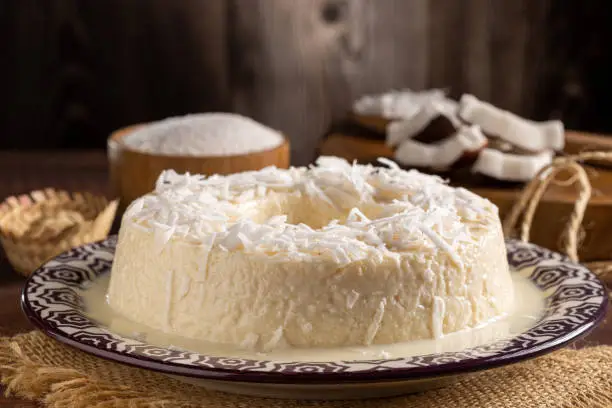
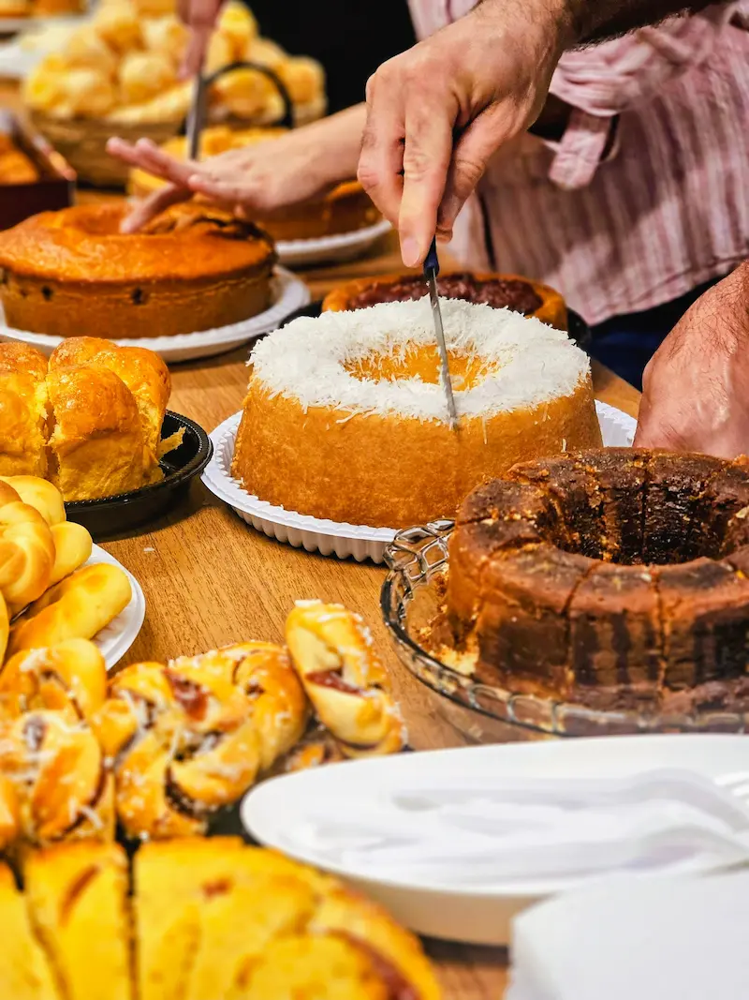

Sabor Caseiro
Receitas que lembram os sabores especiais da família e dos momentos em casa.


Receitas caseiras, ingredientes selecionados e aquele sabor que lembra os melhores momentos em família.
Sabores caseiros que trazem aquele gostinho especial de bolo feito em família.

Fofinho, saboroso e perfeito para acompanhar aquele café da tarde.
Encomende Agora
Bolo de cenoura fofinho, coberto com uma deliciosa camada de chocolate.
Encomende Agora
Bolo de fubá caseiro, com sabor tradicional e aquele gostinho especial de receita de família.
Encomende Agora
Bolo de coco fofinho e saboroso, perfeito para deixar qualquer momento ainda mais especial.
Encomende AgoraMais do que um bolo, queremos levar para sua mesa o sabor e o carinho das receitas feitas em casa.
Receitas que lembram os sabores especiais da família e dos momentos em casa.
Cada bolo é preparado com atenção aos detalhes para tornar seu momento ainda mais especial.
Ingredientes escolhidos para proporcionar sabor, qualidade e uma experiência deliciosa.
Bolos para o café da tarde, comemorações, festas e momentos especiais.

Na Bolos da Vovó, acreditamos que um bom bolo pode transformar momentos simples em lembranças especiais.
Nossa inspiração vem daquele sabor de bolo feito em casa, servido ainda quentinho e acompanhado de um café passado na hora.
Conheça nossos saboresAniversários, reuniões em família e comemorações ficam ainda mais especiais com um bolo preparado para a ocasião.
Conheça nossas opções para festasEscolha seu bolo e faça sua encomenda.
Encomende Agora